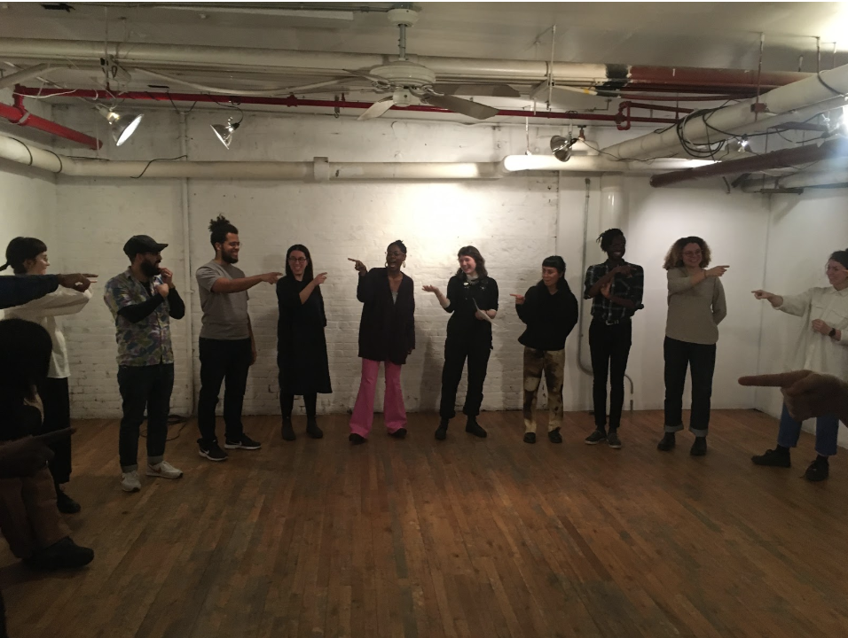
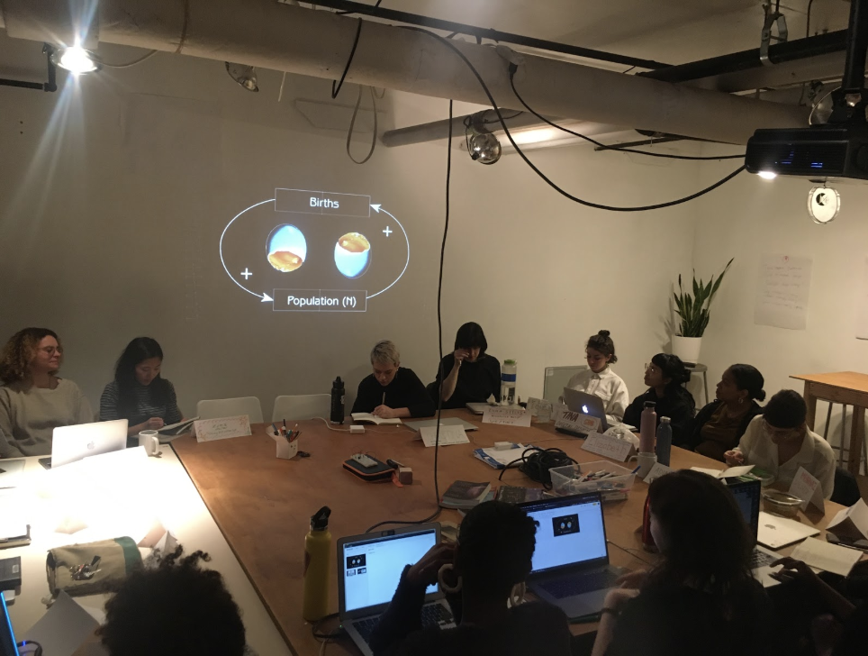
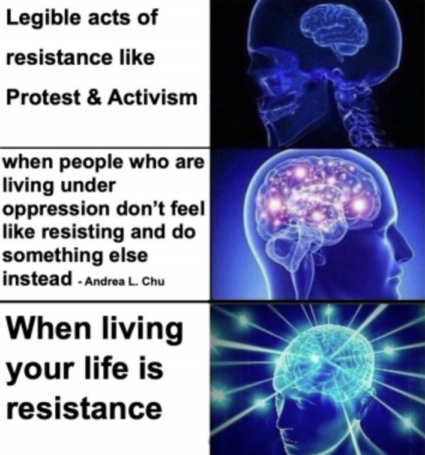

“Cybernetics of Race/ism and Sex/ism” was a class that, in many ways, provided the theoretical background for everything else we have explored throughout Code Societies. It was personal history and social critique. It was wide-ranging and detailed, rigorous and emotional. Taught by Code Societies organizers Neta Bomani and Melanie Hoff, this class used the concept of cybernetic systems as a way of understanding how racial and gendered oppression have gotten coded into nearly every facet of our lives.
Melanie and Neta pointed us to the example of the thermostat as a cybernetic system. The thermostat is not a direct indicator of temperature—instead, it determines the temperature point the whole system stabilizes around. The circular relationship of the thermostat and heater/AC and our bodies (Marcel Goethals) can be seen as similar to the shape of our own relations and social worlds. The ways the climate has stabilized around norms of anti-Blackness and gendered oppression. (As Christina Sharpe reminds us, anti-Blackness is a “total climate,” “pervasive as weather.”1 As Neta told us later in the class, in the language of computation, “racism is a feature and not a bug.”) And the ways we are able to interact with each other through endless circles of feedback and relation.
We began class by talking about our relationships to pronouns, and continued by doing a somatic exercise where we tried to break down normative rules of social interaction. We walked around in a room making up new gestures for greeting and play. This exercise led me to reflect on how many of us need to work harder in order to learn social cues and behavioral standards. While the activity was framed as an undoing, the kinds of interaction dictated by neurotypical, white respectability culture always feel foreign to some of us. Several of my classmates discussed using the exercise to enact non-American greetings and gestures, returning to ways of moving and relating that may have been denied to them in other spaces.
As we continued to discuss the ways we wanted to be referred to in the world, Neta brought up the idea of gender abolition—the concept that the goal should be to abolish gender as an oppressive force altogether. This discussion made me reflect on the ways gender is often seen as a given; even when we try to expand and change ideas of what gender can look like, it is often still assumed this way of categorizing people is legitimate and sustainable. To think about the idea of gender abolition was both unsettling and expansive—what could our imagined futures look like if we stopped relying on established forms of identification? How could an engagement with this concept deepen our analysis of the links between gender(ing) and the carceral state?
As Melanie noted before the presentations began, a dominant approach to this class may have assigned Neta the job of talking about race as a Black person, and expected that Melanie (a white person) and Neta would both talk about sexism. However, whiteness is not neutral. White people also have an active involvement with ideologies of race and experiences of enacting racial oppression.
Neta’s presentation invited us to think about racism, and particularly anti-Blackness, as a choreography of culture, one that controls the movements of our bodies through both physical and digital space. Neta discussed the fact that “race didn’t come through science and technology, it came TO science and technology”—in other words, white supremacy’s use of technological tools is not organic, but deeply intentional and strategic. We learned about the ways anti-Black ideology has even affected the color of our computer screens, influencing a standard of computationally expensive white foregrounds. Neta also referenced the work of Afropessimist thinkers like Frank B. Wilderson III, who differentiate Blackness from other forms of racialization and oppression. As Wilderson reminds us, the problem of Blackness is not simply colonialism or racism but social death; “slaveness is something that has consumed Blackness and Africanness.” From the eugenicist basis of the Human Genome Project to Black CGI supermodels operated by white men, we delved deep into the ways the digital afterlives of slavery echo throughout our technologized worlds.
At one point in their presentation, Neta also talked about Black feminist traditions of care and knowledge (sistering technologies), and the ways that they have been inspired by the work of thinkers such as Omayeli Arenyeka and Mimi Onuoha. Even while the movement of Black people through digital space is often burdened by white violence, there are still new worlds to be found in the ways Black feminists enact liberation and creativity through technological tools.
Melanie’s presentation explored the deep entanglements between sex, white supremacy, reproduction, marriage, and culture as a form of social control. I was particularly interested in the link Melanie drew between eugenics, birth control, and desirability politics. While discussing the ways birth control has been long connected to eugenicist ideology, Melanie also brought up the fact that desirability politics have a direct influence on who gets born. When certain communities are systematically devalued in both intimate and public spheres, this has an impact on who is “allowed” or encouraged to reproduce, whose lives are seen as worthy of reproduction. Melanie used the phrase “eugenics of the mind” to discuss the ways desirability politics actually reflect and shape the landscape of reproduction. In discussing the intersections of patriarchal control and the digital, Melanie also talked about the ways platforms like Instagram have contributed to erasure of and violence against sex workers (as well as sex educators and others whose content has been deemed to “violate community standards”). Relatedly, we talked about how recent SESTA/FOSTA legislation has had harmful effects on sex workers and their ability to safely engage in the industry.
I appreciated the ways that both Melanie and Neta grounded their presentations in their life experiences. Whether it was Melanie discussing the whiteness of their childhood schools or Neta talking about transnational experiences and legacies of Blackness and migration in their family, the knowledge shared in this class was deeply embodied and personal. If there is anything we have learned from studying technology, identity, and oppression in Code Societies, it is that the largest systems can reverberate at the smallest scales, that our everyday interactions and relations are intimately tied with the structures we seek to change.
Image Credit: Melanie Hoff & Neta Bomani